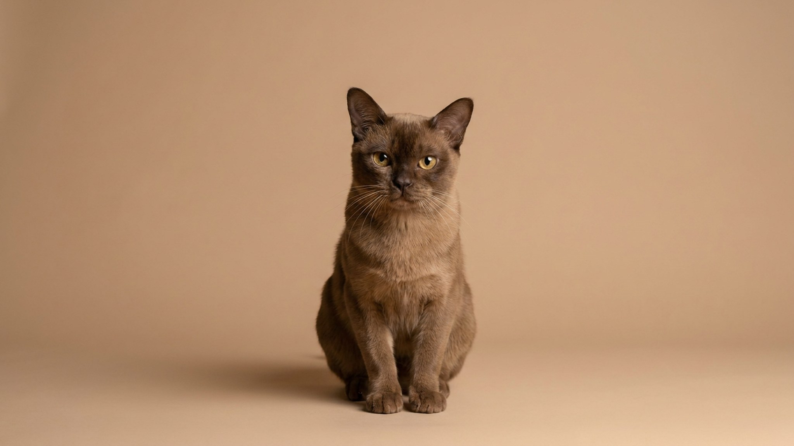

Вы возвращаетесь домой — бурма уже у двери. Не потому что хочет есть: она просто ждала именно вас. Бурманская кошка тяжелее, чем выглядит, и привязана к хозяину сильнее, чем большинство кошек — за это породу прозвали «кирпичом, завёрнутым в шёлк» и «кошкой-собакой». В этой статье разбираем характер бурмы и то, как выстроить с ней быт, если вы подолгу уходите из дома.
🐾 Не уверены, что это опасно?
Опишите симптом в AnimaLife — AI-ветеринар за минуту подскажет, что в пределах нормы, а когда пора к врачу.
Бурманская кошка — порода обманчивая. Компактный корпус, гладкая шерсть соболиного или тёмно-коричневого окраса, округлые очертания — всё это выглядит изящно. Но стоит взять бурму на руки, и сразу понятно: это не хрупкая кошка. Порода отличается плотной мускулатурой и неожиданно солидным весом — отсюда прозвище «кирпич, завёрнутый в шёлк».
Это не просто описание телосложения. Бурма так же плотно встраивается в жизнь хозяина, как этот самый кирпич встроен в стену: незаметно, прочно и навсегда. Порода выведена для жизни с человеком, и ей это нравится.
Бурманская кошка ведёт себя иначе, чем большинство других пород. Несколько ключевых черт, которые удивляют новых владельцев:
Привязанность бурмы — это и её сила, и уязвимость. Порода плохо переносит долгое одиночество. Несколько часов в пустой квартире бурма выдержит спокойно. Но полный рабочий день в одиночестве изо дня в день — это стресс, который проявляется в беспокойстве, навязчивом поведении или потере интереса к играм.
Бурманская кошка хорошо уживается с детьми и другими животными — это важно учитывать при выборе компаньона. Вторая кошка или даже спокойная собака могут стать для бурмы настоящей поддержкой в долгие часы отсутствия хозяина.
Бурманская кошка не требует сложного ухода — она требует присутствия и тепла. Что реально помогает:
🐾 Питомец ведёт себя странно?
AnimaLife расшифрует поведение кошки и собаки и подскажет, что делать. Попробуйте бесплатно прямо в мессенджере.
🐾 Понравился разбор?
Подпишитесь на канал — каждый день разбираем по одному тревожному симптому у кошек и собак: что в пределах нормы, а когда пора к врачу. Подпишитесь, чтобы не пропустить разбор, который может спасти здоровье вашего питомца.
Материал носит информационный характер и не заменяет очную консультацию ветеринара.